Kubernetes and Weave.net on bare metal
Public solutions
Node view
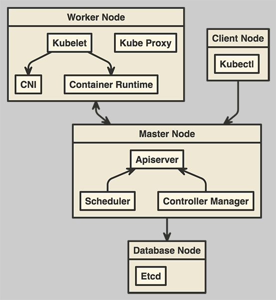
Components view
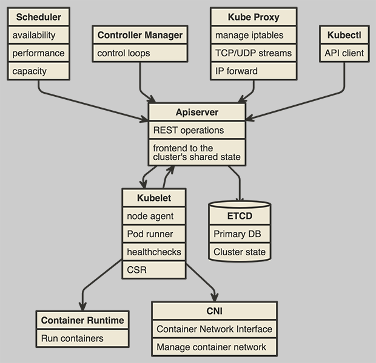
What’s this all about
- SSL
- Etcd
- Master node
- Worker node
- CNI
SSL
SSL: Bundles
1 to 4 bundles per cluster
SSL: single bundle
- Single CA
- Keypairs:
- apiserver
- kubelets
- etcd clients
- etcd peers
- apiserver
SSL: two bundles
- Kubernetes
- CA
- apiserver keypair
- kubelets keypair
- CA
- Etcd
- CA
- peers keypair
- clients keypair
- peers keypair
- CA
SSL: full paranoia
- apiserver
- CA
- keypairs
- CA
- kubelets
- CA
- keypairs
- CA
- etcd peers
- CA
- keypairs
- CA
- etcd clients
- CA
- keypairs
- CA
SSL: keypairs
- keypair per host
- keypair per component
SSL: CA
- Validity!
Etcd

Distributed reliable key-value store
Etcd: Intercommunications
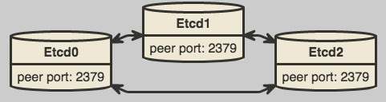
Etcd: Apiserver communications
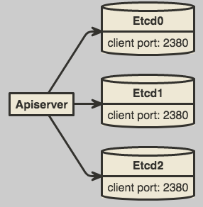
Etcd: initial args
--initial-advertise-peer-urls=https://etcd0:2380 \
--initial-cluster-state=new \
--initial-cluster-token=RfDz6BPYvQWSshe8J0cEhUoAGbnm1LfgS0A77EsjCa \
--initial-cluster=etcd0=https://etcd0:2380,etcd1=https://etcd1:2380,etcd2=https://etcd2:2380 \
Etcd: add node
on any old member:
$ etcdctl member add name peerURLon a new member start
etcdchanging following opts:
--initial-cluster-state=existing --initial-cluster=all-old-members,https://new-member:2380
Etcd: remove node
on any live member:
$ etcdctl member list $ etcdctl member remove ID
Etcd: fault tolerance
Tolerance table
| CLUSTER SIZE | MAJORITY | FAILURE TOLERANCE |
|---|---|---|
| 1 | 1 | 0 |
| 2 | 2 | 0 |
| 3 | 2 | 1 |
| 4 | 3 | 1 |
| 5 | 3 | 2 |
Majority = floor(Size/2) + 1
Tolerance = Size - Majority
Tolerance = Size - floor(Size/2) - 1
Etcd: proxy mode
$ etcd grpc-proxy start --endpoints=...
Master node
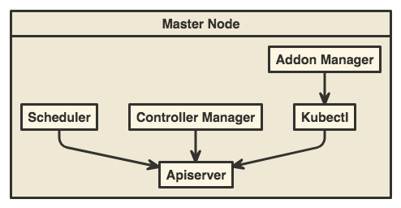
Master node: multimaster
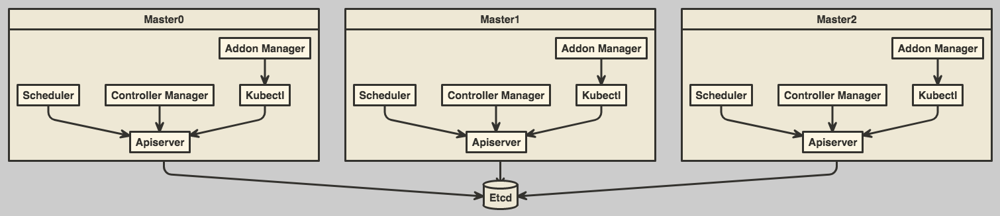
Problems:
- load balancing
- leases
Master node: custom schedulers
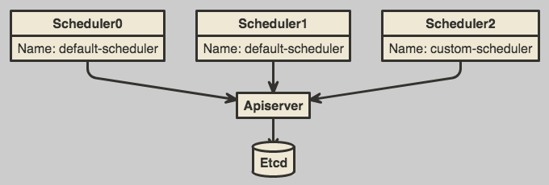
spec:
template:
spec:
schedulerName: default-scheduler
Master node: addon manager
- simple shell script
/etc/kubernetes/addonslabels
metadata: labels: addonmanager.kubernetes.io/mode: Reconcile kubernetes.io/cluster-service: "true"
Worker node
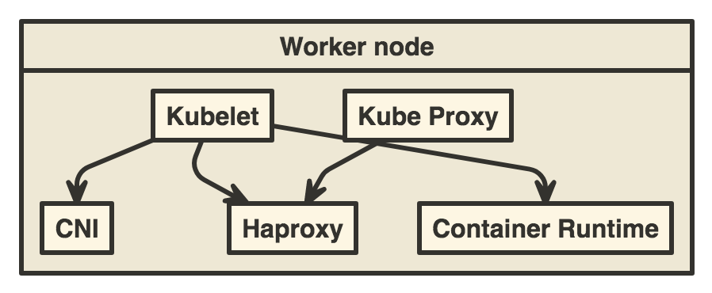
CNI
Container Network Interface
CNI: versions
- Specification: 0.3.1
- Tool: 0.6.0
- Plugins: 0.7.0

CNI: portmap
- forward traffic from one or more ports on the host to the container
- chained
CNI: configuration
/etc/cni/net.d/10-weave.conflist
{ "cniVersion": "0.3.1", "name": "weave", "plugins": [ { "name": "weave", "type": "weave-net", "hairpinMode": true }, { "type": "portmap", "capabilities": { "portMappings": true }, "snat": true } ] }
Weave
- Fast Datapath
- Encryption
- NPC
- Multi-hop routing
- CNI plugin
- Single
clickkubectlexec Kubernetes integration
Weave: Node view
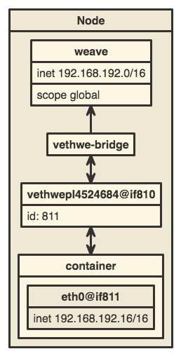
Weave: Topology
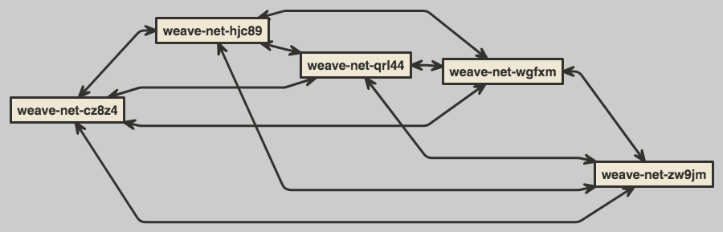
Weave: FDP

Weave: Multi-hop routing
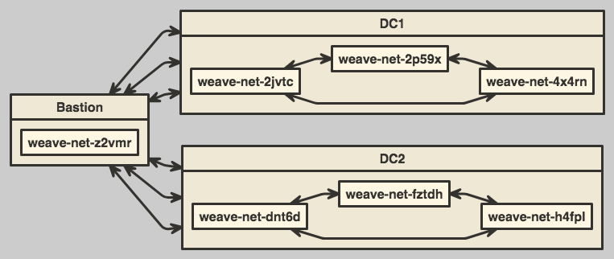
Weave: installation
$ kubectl apply -f "https://cloud.weave.works/k8s/net?k8s-version=\
$(kubectl version | base64 | tr -d '\n')"
Weave: be aware
Always remove /etc/cni/net.d/10-weave.conf
Tips and tricks

Networks
- Host network
- Pod network (CNI)
- Service network (Netfilter)
Don’t forget
ip route add service_network dev internal_interface
Encryption config
kind: EncryptionConfig
apiVersion: v1
resources:
- resources:
- secrets
- configmaps
providers:
- aescbc:
keys:
- name: key1
secret: RnVjayB0aGlzIHNoaXQhCg==
- identity: {}
Encryption setup
# kube-apiserver --experimental-encryption-provider-config=/etc/kubernetes/encryption-config.yaml ...
Actually encrypting the data
$ kubectl get secrets --all-namespaces -o json | kubectl replace -f -
Endpoint reconciler
Good
# kube-apiserver --endpoint-reconciler-type=lease ...Bad
# kube-apiserver --endpoint-reconciler-type=master-count ...
Authentication
Authentication: WARNING
There is no authentication inside kubernetes!
AT ALL!
Authentication: strategies
Bootstrap tokens
Apiserver:
--enable-bootstrap-token-authKubelet:
--bootstrap-kubeconfig=/etc/kubernetes/kubeconfig-bootstrap.yaml
Upgrade
- Patch versions: smooth and simple
- Minor versions: all pods restart